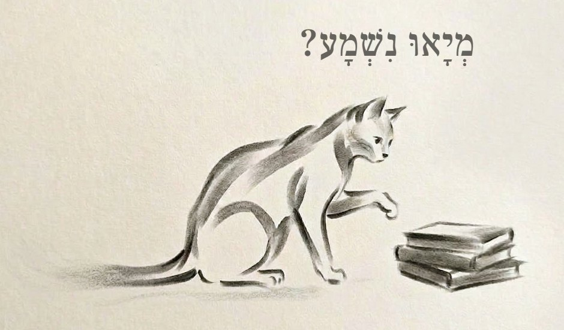

קורא · בדיקת עברית
בנינו שני אתרים חינמיים לדוברי רוסית שלומדים עברית: «קורא» — עשרות סיפורים מנוקדים בארבע רמות, עם הקראה ותרגום של כל מילה, ו«המאמן» למשפטים. הטקסטים, הניקוד וההקראה נבדקו בכלים אוטומטיים, אבל רק מי שעברית היא שפת האם שלו ישים לב למה שנשמע לא טבעי. מה מבקשים: 30–60 דקות, מתי שנוח, ושאלון קצר בסוף.
הממשק באתרים ברוסית — לא צריך להבין אותו. הטקסט בעברית במרכז, וכל מה שצריך לדעת מוסבר כאן. הכי נוח מהטלפון.
פותחים את «קורא», בוחרים רמה בלשוניות למעלה — א (הכי קלה), ב, ג או ד (הכי מתקדמת) — ונכנסים לסיפור. מעניין במיוחד לבדוק את רמות ג ו־ד: שם המשפטים ארוכים ומורכבים יותר.
לוחצים על ▶ בסרגל התחתון: הסיפור מוקרא משפט אחר משפט, והמילים מודגשות תוך כדי ההקראה. לחיצה על משפט מקריאה אותו שוב. כדאי לעבור לפחות על עמוד או שניים.
לוחצים על המילה הבעייתית (ייפתח חלון קטן עם תרגום לרוסית — אפשר להתעלם ממנו), ואז על הכפתור 💬 בפינת המסך. כותבים בעברית מה לא בסדר ואיך זה צריך להיות, ושולחים. הדיווח כולל אוטומטית את הסיפור, העמוד, המשפט והמילה — אין צורך להעתיק או לצלם מסך.
במאמן המשפטים מוקראים בקול המובנה של המכשיר, ולכן ההגייה שם לפעמים משובשת יותר. גם על זה נשמח לשמוע — דרך אותו כפתור 💬.
גם דיווח אחד עוזר. ואם הכול נשמע לכם טבעי — זו תשובה חשובה לא פחות.
אין שדות חובה. הטיוטה נשמרת בדפדפן עד השליחה.
לא צריך להירשם, והשאלון אנונימי (אלא אם השארתם פרטי קשר). רק יוצר הפרויקט רואה את התשובות. תודה רבה על העזרה!